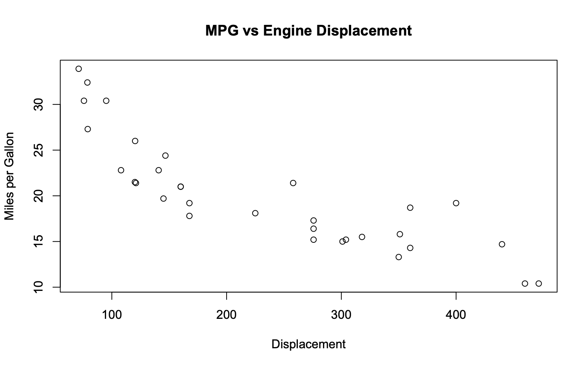

Working with Data in R
Keeping Track of progress in R
So far we have been working exclusively in the R console. This is useful for trialing code and doing quick intial analyses, however, the code we have typed is not saved for when we might look back at it in the future. If we want to keep a permanent record of our code, we can do this using a r-script. An r-script is basically a text-file containing lines of r-code. Usually we create them from scratch within R, though they can be created by importing a text file from text editor.
The easiest way to create an r-file is by clicking the button in the top left corner of RStudio that looks like a piece of paper with a green plus over it. The use of # for commenting is common. For example below
getwd() # this line of code sets the working directory.
paste("RRRRR") # this line of code pastes RRRRR.
#paste("RRRR") # this line doesn't
# One is enough, but sometimes I can use a few to make the code tidy, like below.
#====
# Section 1
#====Setting Working Directory
When we use R, it is always associated with a specific directory within our computer. The place that R is associated with is known as the working directory. The working directory is the default place where R will look when we try to import (export) objects into R as well as the place that files are saved to. We can find out which directory R is pointed at by using the getwd() function:
getwd()## [1] "/Users/waqr/Desktop/r course website"If you know that you will be reading and writing multiple files from and to the same folder, you can set the working directory to that folder. This can be useful when a project has many different r-files and associated items such as data, functions, plots etc. In this case, one can set the working directory to the folder containing the files to make sure that everything stays in one place. It is also useful for when projects are shared between individuals using different computers, as setting the working directory to the shared folder prevents any isses that could arise from people organising their files in different ways.
A new working directory can be set by clicking on the tab (Session) then (Set_Working Directory), or by the command setwd. Below I give the example of setting the working directory to my documents.
filename = "C:/Users/Robert/Google Drive/Teaching/R Course/Intro_to_R"
setwd(filename)
getwd()Importing Data
In almost every project, you will want to import some data to analyse. This data will come in a variety of formats. R studio has a nice feature in Environment>Import_Dataset which enables you to select the file you wish to download (similar to STATA) from your computer. The data is then imported into R and the code that R has used is displayed in the console.
It is possible to import files in the following formats:
| Type | Suffix |
|---|---|
| R | .R |
| CSV | .csv |
| Excel | .xls/.xlsx |
| SPSS | .spv |
| Stata | .dta |
If we want more control over the way that R imports the data we can also use the necessary commands in R directly. Some important examples of this are given in the next subsections.
In addition, packages can be installed to import data in almost any format. Packages are collections of R functions and code in an organised framework. The directory where packages are stored on your computer is called the library. For example the readr package which allows for easier reading of data can be installed from the internet using the code install.packages(“readr”), then loaded into R using library(readr).
CSV (Comma-seperated values)
A common format of data that you will likely import is comma-seperated values (CSV) data. CSV Data is seperated by commas in rows. For example:
Age,Name,Sex,
30,Richard,Male,
27,Hazel,Female,
28,Louise,"",
Creates:
| Age | Name | Sex |
|---|---|---|
| 30 | Richard | Male |
| 27 | Hazel | Female |
| 28 | Louise |
We can import the file using the full path with the file name and suffix included such as below. This will look in the working directory for the file specified, so given our working directory is “C:/Users/Robert/Documents” R will look in the Documents folder for the file “car_Data.csv”.
It will then convert the first row to be the header of the data. There are numerous other options which we will skip for now.
# car_Data <- read.csv(file = "car_Data.csv", header = TRUE)
# if you couldn't get that to work don't worry, this is an example dataset from base R.
car_Data <- mtcarsDownloading files from the internet
Sometimes it is more practical to download files directly from the internet. There are lots of different packages out there to do this. The one I use was developed by Hadley Wickham, called readr. Below we are going to download some data from the course github page. Github is a hosting service for source code (in this case R code), it allows users to store code, data and other files. This aids version control, collaboration, replication and consistency of material over time,
# load the readr package, if this is not installed then install it.
#install.packages("readr")
library(readr)
#use the function read_csv
car_Data <- read_csv("https://raw.githubusercontent.com/RobertASmith/Intro_to_R/master/car_Data.csv", header = TRUE)Downloading files directly to R within the same script as the analysis can be useful since it reduces the risk of you accidently changing the file. Just be careful that the data will always be available.
Summarising Data
Once we have our data read into R, we want to ensure that the data is as we would expect, in the correct format etc.
We can use the function head to look at the first 6 number of lines of the data. We can specify a different number of lines by changing the function input.
# head data with default 6 rows
head(car_Data)# head data with 10 rows
head(car_Data, n = 10)We can summarise a dataset using the function summary. This shows us the length, class and Mode. If the class is numeric it will give some indication of the distribution by displaying min, median, mean, max.
# summarise the data,
summary(car_Data)## mpg cyl disp hp
## Min. :10.40 Min. :4.000 Min. : 71.1 Min. : 52.0
## 1st Qu.:15.43 1st Qu.:4.000 1st Qu.:120.8 1st Qu.: 96.5
## Median :19.20 Median :6.000 Median :196.3 Median :123.0
## Mean :20.09 Mean :6.188 Mean :230.7 Mean :146.7
## 3rd Qu.:22.80 3rd Qu.:8.000 3rd Qu.:326.0 3rd Qu.:180.0
## Max. :33.90 Max. :8.000 Max. :472.0 Max. :335.0
## drat wt qsec vs
## Min. :2.760 Min. :1.513 Min. :14.50 Min. :0.0000
## 1st Qu.:3.080 1st Qu.:2.581 1st Qu.:16.89 1st Qu.:0.0000
## Median :3.695 Median :3.325 Median :17.71 Median :0.0000
## Mean :3.597 Mean :3.217 Mean :17.85 Mean :0.4375
## 3rd Qu.:3.920 3rd Qu.:3.610 3rd Qu.:18.90 3rd Qu.:1.0000
## Max. :4.930 Max. :5.424 Max. :22.90 Max. :1.0000
## am gear carb
## Min. :0.0000 Min. :3.000 Min. :1.000
## 1st Qu.:0.0000 1st Qu.:3.000 1st Qu.:2.000
## Median :0.0000 Median :4.000 Median :2.000
## Mean :0.4062 Mean :3.688 Mean :2.812
## 3rd Qu.:1.0000 3rd Qu.:4.000 3rd Qu.:4.000
## Max. :1.0000 Max. :5.000 Max. :8.000# summarise single variable
summary(car_Data$mpg)## Min. 1st Qu. Median Mean 3rd Qu. Max.
## 10.40 15.43 19.20 20.09 22.80 33.90We can use the output of the summary function to create objects. The summary of the mpg variable gives the quantiles. These can be stored as an object, here called temp (temporary object). If we just want any one number from the vector of quantiles we can define this in brackets. The script below creates two new objects, median and range.
temp <- summary(car_Data$mpg)
Median <- temp['Median']
Range <- temp['Max.'] - temp['Min.']Plotting Data
Line Plot
R also has wide ranging plotting capabilites. For basic plotting we can use the plot function. In this next example, we will prodcue a simple plot of miles per gallon vs engine displacement in our data set to see what the relationship between the variables.
#plot of mpg vs disp
plot(x = car_Data$disp, y = car_Data$mpg)
#notice we can remove arguments and still get same result
plot(car_Data$disp, car_Data$mpg)
Whilst this plot is useful, it is quite basic. We make the plot more informative by specifying extra features that we want when we call the plot function. We can add labels, titles, lines of best fit and more.
plot(x = car_Data$disp, y = car_Data$mpg,
type = "p",
xlab = "Displacement",
ylab = "Miles per Gallon",
main = "MPG vs Engine Displacement")Sometimes we may just want to see the distribution of a single variable in the data. For numerical variables this is done easily by using plotting a histogram. To plot a histogram in R we use the command hist.
hist1 <- hist(car_Data$mpg)
#We can alter the 'bins' by specifying the additional argument 'breaks = ' in the hist function
hist(car_Data$mpg, breaks = c(10,12.5,15,17.5,20,22.5,25,27.5,30,32.5,35))
#a neater way of doing the same as above is to use seq
hist(car_Data$mpg, breaks = seq(10,35, by = 2.5))
#we can again edit the title etc by adding extra arguments
hist(car_Data$mpg,
breaks = seq(10,35, by = 2.5),
xlab = "Miles per gallon",
main = "Histogram of Miles per Gallon")
Excercises
Exercise 1
Load the iris dataset from base R into an object called flowerData by running the code ‘flowerData <- iris’
Output the first 10 rows of the data
3 What class of object does each variable belong to?
3 Plot a seperate histogram of the sepal length for each species. Add a title and labels to each so that you know which is which.
4 Do you see any large differences between the distributions? (Try changing the ‘breaks’ argument to see if this makes things clearer)
## 'data.frame': 150 obs. of 5 variables:
## $ Sepal.Length: num 5.1 4.9 4.7 4.6 5 5.4 4.6 5 4.4 4.9 ...
## $ Sepal.Width : num 3.5 3 3.2 3.1 3.6 3.9 3.4 3.4 2.9 3.1 ...
## $ Petal.Length: num 1.4 1.4 1.3 1.5 1.4 1.7 1.4 1.5 1.4 1.5 ...
## $ Petal.Width : num 0.2 0.2 0.2 0.2 0.2 0.4 0.3 0.2 0.2 0.1 ...
## $ Species : Factor w/ 3 levels "setosa","versicolor",..: 1 1 1 1 1 1 1 1 1 1 ...


Troubleshooting in R
Errors
When doing any sort of programming work, things often don’t perfectly on the first try. Unfortunately, making mistakes and learning from them is an important part of becomming a better programmer. The process of troubleshooting generally follows 4 main steps:
Read the error message. Sometimes it will be obvious what the error is from the message itself allowing you to quickly go back to your code and correct it.
Read the R documentation. If the error has arisen whilst using a particular function or package then the documentation for those functions and packages will often have all the answers you need to solve your issue. Reading help files (which can be found using help(###) or ?###) is an importnant part of gaining a better understanding of R so don’t skip this step, however tempting it is.
Go on the internet. There are many useful places on the internet to get help with any issues you encounter. Copying the error message into a google search will often reveal that someone else has had the same issue as yourself, and more often than not there will be myriad solutions for you to implement from other helpful R users. StackOverflow is a particularly useful place to go looking for help.
Ask for help directly. If no solutions for your issue (or one that is similar enough for you to work out how to solve it on your own) have been found then you can ask directly to places like StackOverflow for help. Bear in mind that you will need to create a simpler version of your code with just enough in it to re-create the error. People wont read thorugh thousadns of lines to help sort your error!
More detail on these steps can be found at link and there are many other resources online that can help for any issues that you might encounter.
hist(car_Data$Mpg)
hist(as.factor(car_Data$cyl))Advice for R skill building
Naturally at some point you will be faced with the challenge of doing something in R that you have have not done before, and so is outside your current skill level. The process for learning this new capability is very similar to that of trouble shooting:
First, ask can you use the functions and packages that you have already in your R reportoire to solve the issue? Trying to solve your issue this way first will deepen your understanding the capabilites of R and each package and function within it. This step will likely involve lost of reading of R documentation, so don’t be tempted to skip this step!
If you have tried this but you are just getting errors then go through stages 1 and 2 of the troubleshooting procedures outlined above.
If doing steps 1 and 2 still has not brought you any success, then it’s time to go searching the internet for help. A quick google search of what you want to do will often reveal multiple ways to do whatever it is your trying, and again places like stack overflow are very helpful for this.
It is tempting to skip straight to step three at times (and we would be lying if we said we didn’t sometimes do it ourselves) but it’s better to resist. Doing steps 1 and 2 will allow you to work out which of the solutions available online is best for you, and the greater understanding you develop by taking this longer route will make you a better programmer in the long run, as you are more likely to understand the solutions given to you online. Overall this will open up the pathway to speedier problem solving in your code. Copying coded solutions off the internet to put in your work without understanding the limitations of your attempts or the how the solutions work may produce immediate results but at the sacrifice of your development as a programmer.
Further learning
We hope to see you again on further courses with us at ScHARR. However, alternative resources are available:
R for Data Science is a good place to recap the materials taught in this course. The hard copy of Hadley Wickham and Garrett Grolemund’s book of the same name (and content) is available on amazon
An R user guide is available on the CRAN R-Project website here, although the author finds this less easy to follow than Hadley Wickham’s book described above.
Also, you can learn R in R with swirl. Swirl has a range of short courses (approx 30mins) which are undertaken in R. You can download swirl by typing install.packages(“swirl”) into R. Once installed loading swirl from the library with library(swirl) and then following instructions within R.